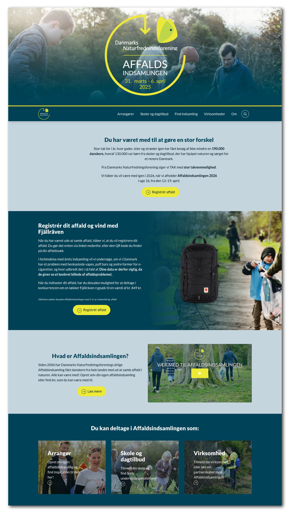
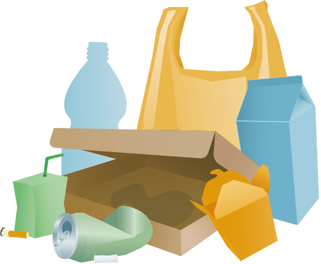

Affaldsindsamlingen er Danmarks Naturfredningsforenings årlige indsamling af affald i naturen. Projektet løber af stablen i foråret, og jeg har været en del af det årlige arbejde med web, skolematerialer, grafik og kommunikation i perioden 2023-2025.
Affaldsindsamlingen har mange målgrupper, og det var derfor en udfordring at kommunikere skarpt.
Et af problemerne, som vi identificerede, var at det ikke nødvendigvis var åbenlyst at affaldsindsamlinger var noget som alle i princippet kunne oprette på affaldsindsamlingen.dk.
For at tydeliggøre projektets formål for de besøgende udviklede vi en form for 'explainer/kampagne' video.
Jeg har stået for manuskript, nogle af optagelserne, speak og redigering.
Videoen er redigeret i Adobe Premier Pro.
Affaldsindsamlingen udvikler sig hvert år - og det samme har hjemmesiden. I løbet af mine år på projektet, har jeg været med til at streamline den visuelle stil, optimere UX og SEO på siden samt vedligeholde og uploade nyt materiale
Vi har løbende arbejdet med at skabe en tydelig og velprioriteret landingpage, som effektivt kunne kommunikere til de forskellige målgrupper
I forbindelse med Affaldsindsamlingens skolematerialer, har jeg lavet en række illustrationer. Jeg plejede at joke med at mit arbejde var 'at tegne skrald og blomster'.
Affaldsindsamlingen er i høj grad et projekt, som er målrettet skoler. I den forbindelse udvikles der hvert år et nyt sæt materialer til skolerne. Jeg har haft til opgave at sætte materialerne op i Adobe InDesign.